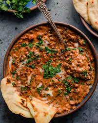
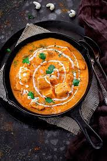

Dal Makhani Recipe:
★ Ingrediants
- Sabut Urad Dal
- Rajmah
- Oil
- Vegetables
- Spices
- Cream
★ Steps
- Soak dal and rajmah overnight. Prepare ingredients as mentioned in the list.
- Wash dal and rajmah and pressure-cook in excess water for one whistle. Remove from fire and cool slightly, drain and discard the water.
- Add 4 cups water and salt and pressure cook for another 30 minutes, till the dal is well cooked.
- In a karahi, heat ghee and fry the chopped ginger, garlic and onion till golden brown. Add green chillies and red chilli powder and fry for a minute. Add the tomato puree and cook till the ghee separates. Add to the dal and bring to a boil, then add MAGGI Masala-ae-Magic and add salt to taste. Simmer for a few minutes.
- Remove from fire and mix in the cream. Garnish with coriander leaves and serve hot with rotis or parathas.

Sahi Paneer Recipe:
★ Ingrediants
- Paneer
- Oil
- Vegetables
- Spices
- Cream
★ Steps
- Prepare ingredients as mentioned in the list.
- Pressure cook together onions, tomatoes, ginger and garlic with ½ a cup of water. Cool and blend into a smooth paste.
- Heat butter in a pan. Add coriander powder, red chilli powder, kasuri methi and the paneer cubes. Sauté for a few minutes.
- Add the onion-tomato paste, ½ cup water and salt to the paneer. Bring to a boil and simmer for 5 minutes. Then, add 2 tablespoons of cream and let it simmer for 2 minutes.
- Add the onion-tomato paste, ½ cup water and salt to the paneer. Bring to a boil and simmer for 5 minutes. Then, add 2 tablespoons of cream and let it simmer for 2 minutes.
